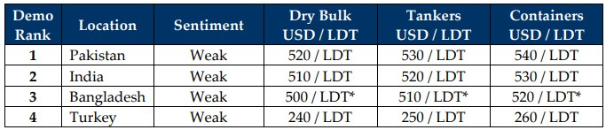

inWeekly Demolition Reports27/12/2022

As sub-continent markets veer through the last couple of weeks towards the end of the year, we can look back and reflect on what has been an extremely turbulent 2022.
Prices reached decade long peaks above USD 700/LDT in the first quarter of the year before crashing back down by about USD 200/LDT, with certain trades seeing below the USD 500/LDT barrier and even into the high USD 400s/LDT on certain occasions.
On the West End, the situation was no different in Turkey, where levels too hit a record USD 500/Ton for a brief period, only to plummet about half in value (about USD 250/MT) in a rather short period, and has remained on the sidelines ever since.
Steel plate prices and especially the relevant currencies have all seen record lows against the U.S. Dollar, shattering records by the month during the summer period.
We have also seen decade lows in the supply of tonnage, with almost all freight sectors performing strongly this year, as we finally seen a much-anticipated rebound on tankers following a number of years in the doldrums.
Dry Bulk and Containers have also had outstanding years, with minimal scrapping seen in both sectors during the first half of the year. As such, moving into 2023, we do expect to see more vessels enter the market for recycling from each of these sectors, especially as freight rates have cooled off considerably towards the end of this year.
There are also a number of vessels trading right up to their limits (in terms of surveys) and due to older age profiles and reduced earnings, Owners are unlikely to pass further surveys and may well scrap with recycling rates still looking relatively firm (USD 350/LDT being the historical average). A reduction in the fleet size amidst relatively low newbuilding deliveries for 2023 should help charter rates recover and for various earning cycles to start again.
For week 51 of 2022, GMS demo rankings / pricing for the week are as below.

📄 Download PDF: Ship-recycling-market-insight-week-51-2022-Turbulent-Times.pdf
Source: GMS,Inc. ,https://www.gmsinc.net/gms_new/index.php/web